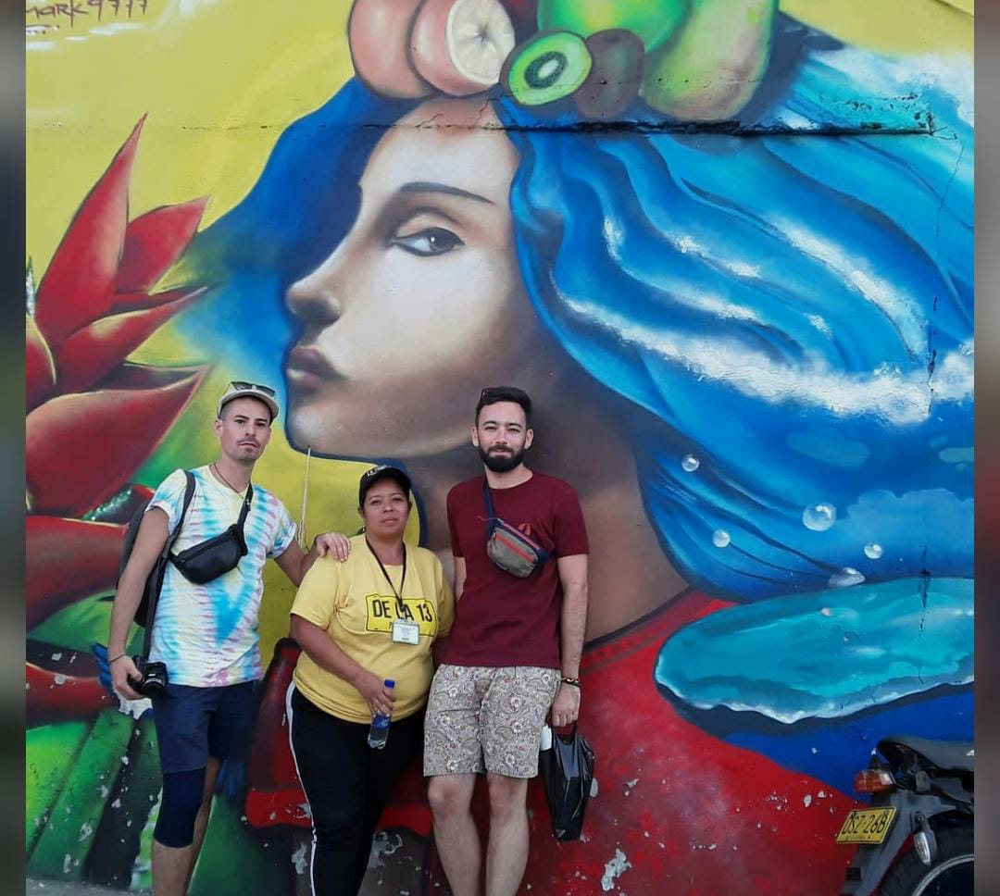

NUESTROS RECORRIDOS
La Comuna 13 de la ciudad de Medellín posee gran actividad turística y cultural; nos presenta la transformación social y artística que ha tenido, a través de una renovación urbana por medio del arte, traspasando la barrera de las contingencias históricas y posicionándose como un sitio atractivo, innovador y acertado para conocer más de la cultura paisa. El Graffiti Tour promueve el desarrollo de obras y grafitis que hacen incluyente la construcción y transformación social y cultural de Medellín. El Graffiti Tour por La Comuna 13 tiene salidas diarias y una duración de 4 horas.
